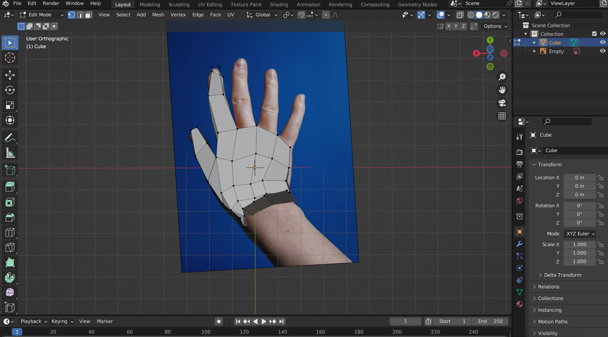
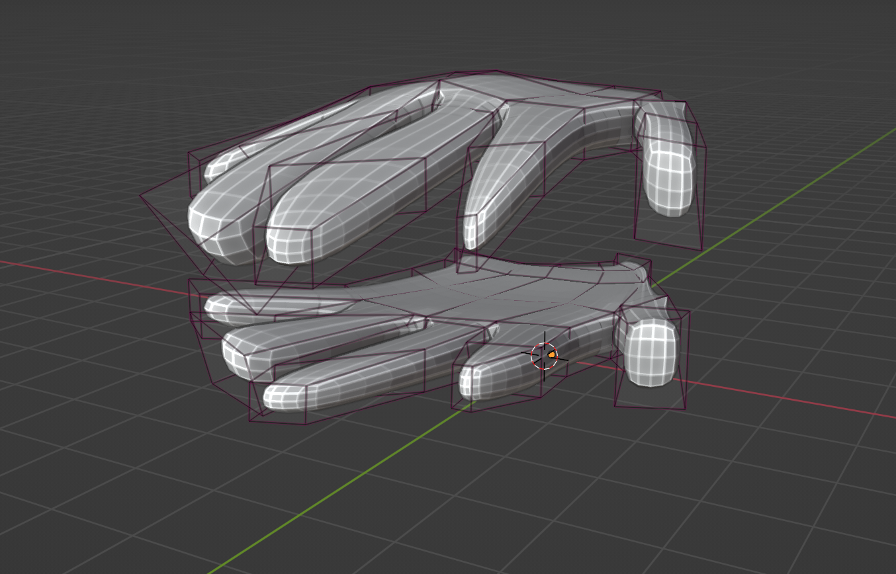
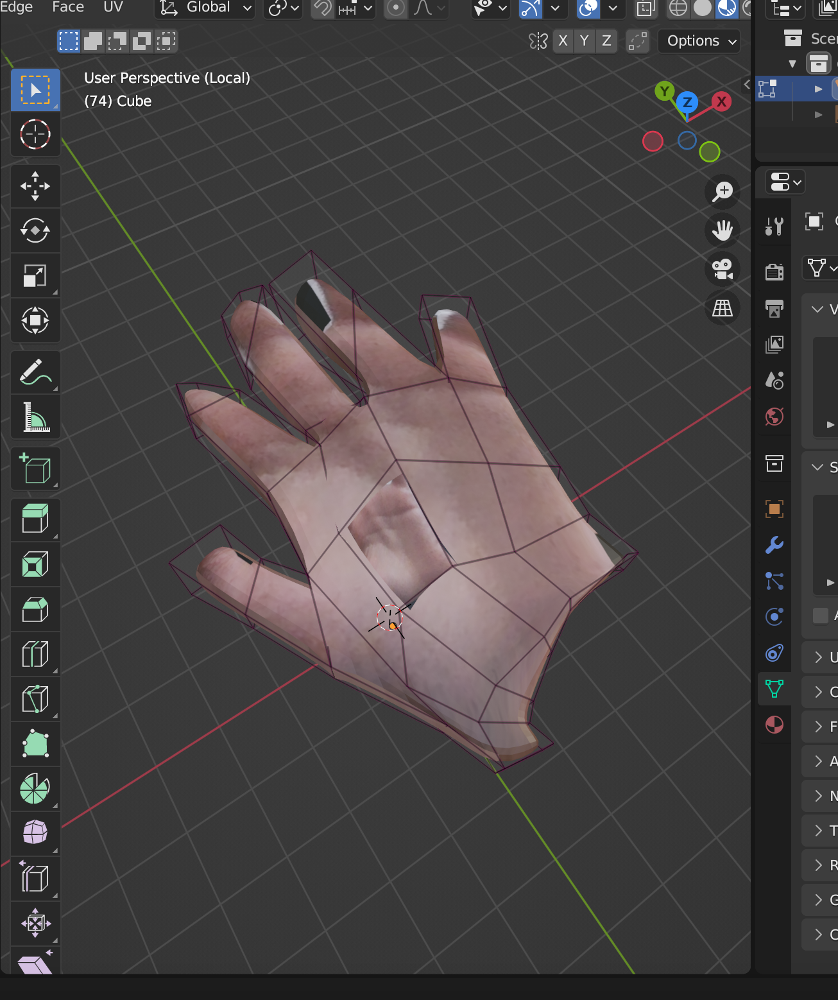
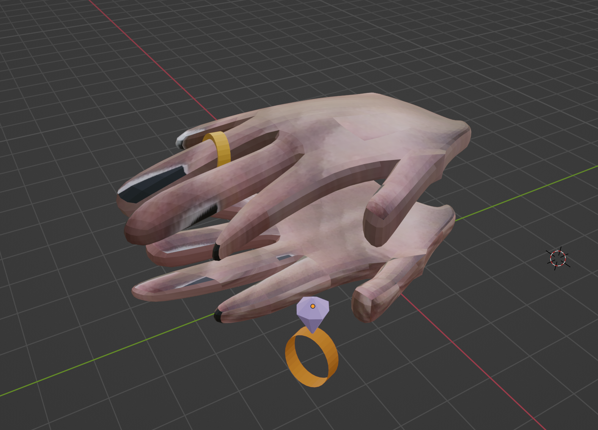
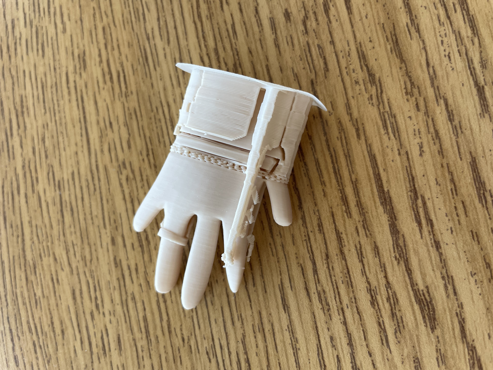

Alexandra W!!
print: Hello World!
print: This is my awesome website!
Project progress: I have decided to make a realistic-looking 3-D printed hand for my project (like the ones used in neuroscience experiments). With Mr. Lindows' help, I have gone through UltiMaker Thingiverse and have drawn some inspiration from previous projects. For this project, I will be using Blender for the coding and design aspects. While I haven't yet designed a hand, I have practiced making simple shapes on Blender and trying to figure out how to use all the different features before making my first model of the hand I want to print.
10/20/23: I have spent some time working with Chris on learning the key codes for MacBooks to use Blender and have starting making a basic model of a 3D printed hand
10/26/23: Today I finished desinging a basic model of a 3D hand. I have to work on making it look more realistic and have to work on rounding out and shaping the fingers and palm. These were some of my steps:

11/03/23: Since my last update, I have created another hand and have worked on establishing further steps with Mr. Lindow
11/15/23: Since my last update, I have worked on adding textures to my 3D model. To do this, I took a picture of my skin on photobooth and then added it onto my model using UV mapping. The pictures below illustrate the process of how I accomplished this:

12/8/23: Since my last update, I have worked more on making the hand textures look more realistic. I have also made a few tweaks with the frames. I also talked to Mr. Lindow about using a 3D scanner so that I can 3D print a model of an actual hand.  2/7/2024: Since my last update, I have finished working on the actual hand and have moved on to accessories. I have made rings, one plain gold ring, and one diamond ring with a gold band. I have also worked with Mr. Lindow on the first round of printing out my hand. I did this by exporting my Blender file as an STL file and then sending that file to Mr. Lindow. We used prusaSlicer which is an open-source tool that contains everything one needs to export the files into G-code so that it can be properly 3D printed. Pictures of my recent work is attached below. The first picture is a screenshot of me working on creating the rings on Blender and the second photo is a picture of the printed out version of one of the hands with its supports still attached.  